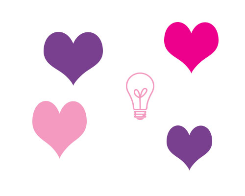

About
Mission
Our mission is to invest, promote, and retain women in all technical and STEM fields. We promise to lead with impact to provide a welcoming and open community for members to develop, grow, and maximize all career opportunities.Goals
- To have a meaningful impact on the community
- To represent United Technologies with the upmost respect and admiration
- To steer and support others' accomplishments, achievements, and overall success
- To develop, recruit, retain high performance women in all technical and STEM
- To create an open community for members to feel free to share their thoughts, ideas, and challenges
Meet the Members
Executive Committee
Executive Sponsors
Chapter Leads
Program Manager
Committees
Recruiting Committee
Engagement Committee
Philanthropy Committee
Photos Go Here
